Control valve body disassembly/assembly
Control Valve Body Disassembly
- • Denting or scratching these components will reduce the ability of the transaxle to shift properly. When handling these components or the valve body that contains them, be careful not to drop or hit them.
1. Disassemble in the order indicated in the table.
2. Neatly arrange the removed parts to avoid confusing the similar parts.
- • Using compressed air can cause dirt and other particles to fly out, causing injury to the eyes. Wear protective eye wear whenever using compressed air.
3. Clean the removed parts with cleaning solvent, then use compressed air to dry them. Use compressed air to clean out all holes and passages.
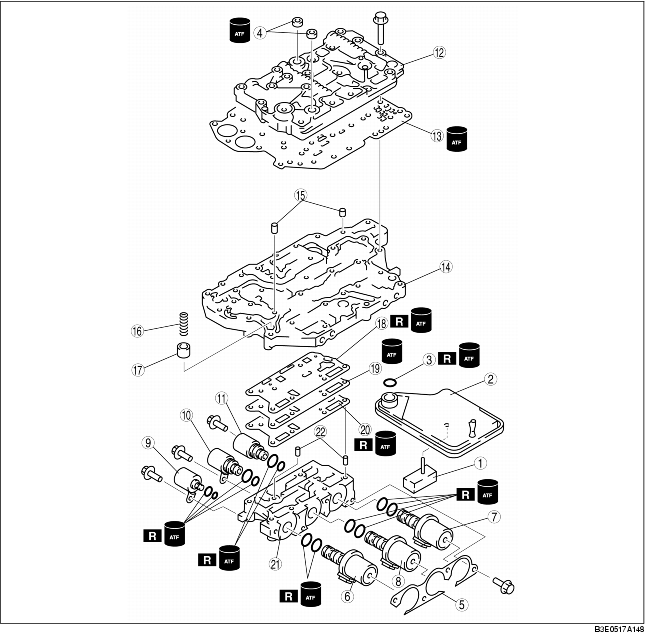
Disassembly procedure
1. Remove the oil strainer.
2. Remove the O-ring from the oil strainer.
3. Remove the packing.
4. Remove the bracket.
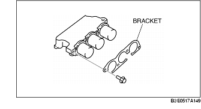
5. Remove the shift solenoid A, B, C.

6. Remove the pressure control solenoid, shift solenoid D, E.

7. Loosen the bolts evenly in the pattern shown.
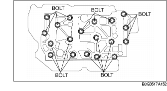
8. Remove the upper control valve body.
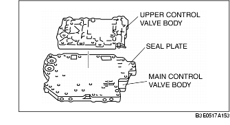
9. Remove the seal plate.
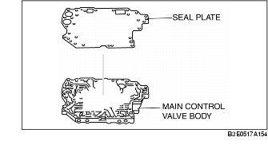
10. Remove the main control valve body.
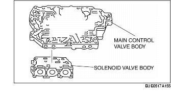
11. Remove the tubular pins, pressure modifier accumulator spring and pressure modifier accumulator from the main control valve body.
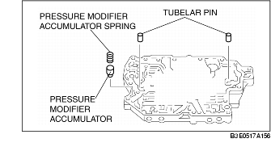
12. Remove the gasket D, separator plate and gasket C.
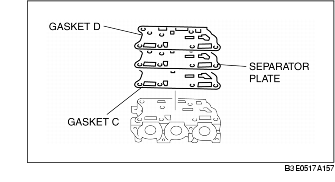
13. Remove the tubular pins.
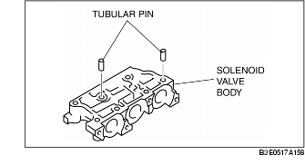
Upper Control Valve Body Disassembly/Assembly
- • Denting or scratching these precisely machined components will reduce the ability of the transaxle to shift properly. When handling these components or the valve body that contains them, be careful not to drop or hit them.
- • If a valve does not slide out under its own weight, place the valve body open-side down and tap on the valve body lightly with a plastic hammer.
1. Disassemble in the order indicated in the table.
- • Using compressed air can cause dirt and other particles to fly out, causing injury to the eyes. Wear protective eye wear whenever using compressed air.
2. Clean all parts and holes using compressed air and apply ATF to them immediately before assembly.
3. Assemble in the reverse order of disassembly.
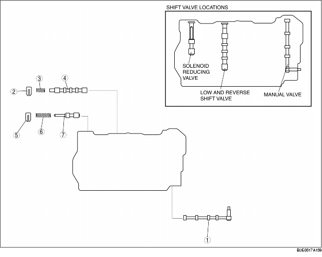
Assembly procedure
1. Measure the spring free length.
2. Install the solenoid reducing valve, solenoid reducing valve spring and retainer.
3. Install the low and reverse shift valve, low and reverse shift valve spring and retainer.
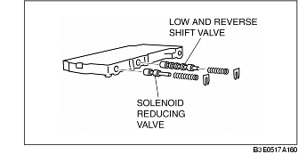
4. Install the manual valve.
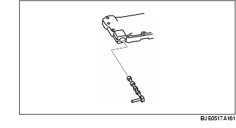
Main Control Valve Body Disassembly/Assembly
- • Denting or scratching these precisely machined components will reduce the ability of the transaxle to shift properly. When handling these components or the valve body that contains them be careful not to drop or hit them.
- • If a valve does not slide out under its own weight, place the valve body open-side down and tap on the valve body lightly with a plastic hammer.
1. Disassemble in the order indicated in the table.
- • Using compressed air can cause dirt and other particles to fly out, causing injury to the eyes. Wear protective eye wear whenever using compressed air.
2. Clean all parts and holes using compressed air and apply ATF to them immediately before assembly.
3. Assemble in the reverse order of disassembly.
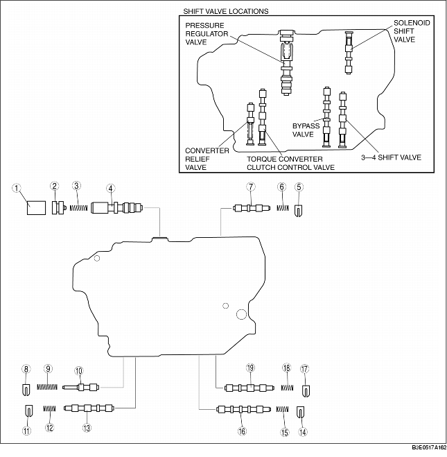
Assembly procedure
1. Measure the spring free length.
2. Install the 3-4 shift valve, 3-4 shift valve spring, and retainer.
3. Install the bypass valve, bypass valve spring, and retainer.
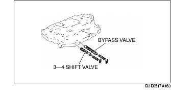
4. Install the torque converter clutch control valve, torque converter clutch control valve spring, and retainer.
5. Install the converter relief valve, converter relief valve spring, and retainer.
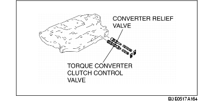
6. Install the solenoid shift valve, solenoid shift valve spring, and retainer.
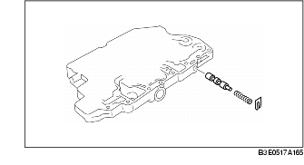
7. Install the pressure regulator valve, pressure regulator valve spring, and retainer.
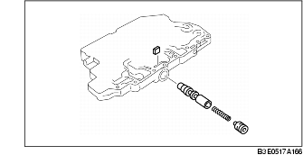
Control Valve Body Assembly
1. Verify that all parts are clean and free of dust and other small particles.
2. Apply ATF to all parts.
3. Assemble in the reverse order of disassembly.
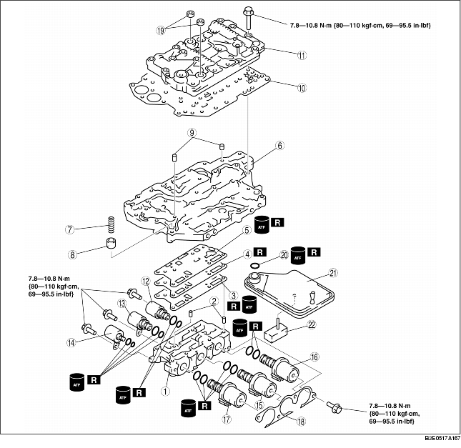
Assembly procedure
1. Install the tubular pins into the solenoid control valve body.
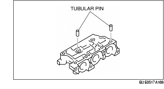
2. Set the new gasket C, separator plate, and new gasket D on the solenoid control valve body.
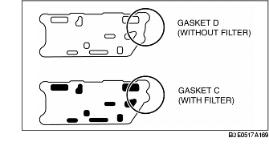
3. Install the pressure modifier accumulator and pressure modifier accumulator spring into the main control valve body.
Pressure modifier accumulator spring free length
4. Install the tubular pins into the main control valve body.

5. Set the main control valve body onto the solenoid control valve body.

6. Set the seal plate on the main control valve body.
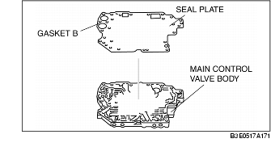
7. Set the upper control valve body onto the main control valve body.

8. Hand-tighten the bolts shown in the figure. Each type of bolt has a different letter on its head. Match the bolt letter with the letter stamped next to its installation hole on the valve body.
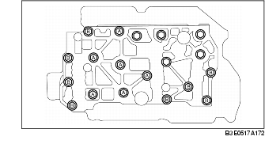
Bolts identification
9. Tighten the bolts evenly and gradually in the order shown.
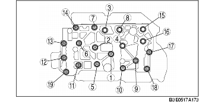
Tightening torque
10. Install the shift solenoid D, E, and pressure control solenoid.
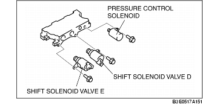
Tightening torque
11. Install the shift solenoid A, B, C.
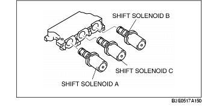
12. Install the bracket.

Tightening torque
13. Install the packing.
14. Apply ATF to new O-ring and install it onto the oil strainer.
15. Install the oil strainer onto the main control valve body.